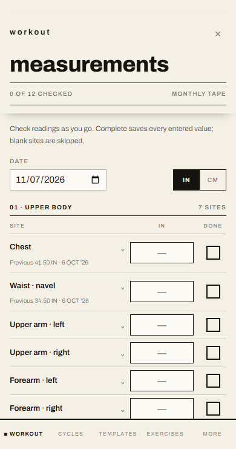
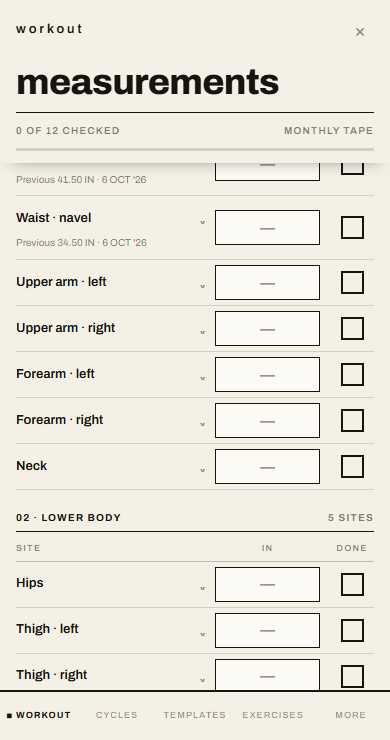
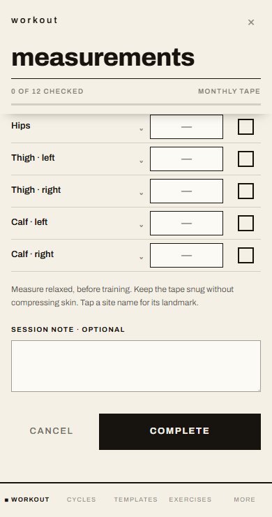
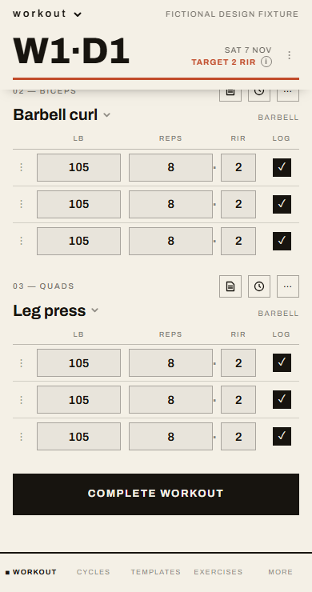
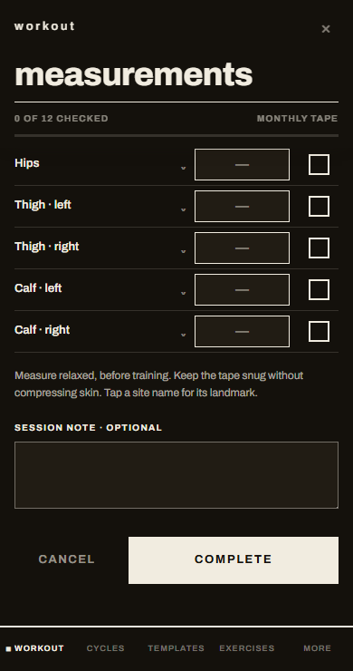

Owner clarification, 7 November 2026. Actual components rendered at 390 x 740 with fictional data. The measurement form uses document scrolling and AppShell. Complete/Cancel occur after the last field, with no fixed or sticky ancestor. They are absent at top/middle and visible at the end, above BottomNav. The actual all-sets-logged DayView shows the same inline completion placement. Measurement save does not require all sites or checks.
Date: 160 x 35px. Units: 88 x 35px. Workout and measurement numeric cells: 105 x 35px at this viewport, 15px text. See the review for 320/360/430px checks, CI and verification limits. These are local fixtures; they do not establish hosted signed-in persistence or physical iOS behavior.




